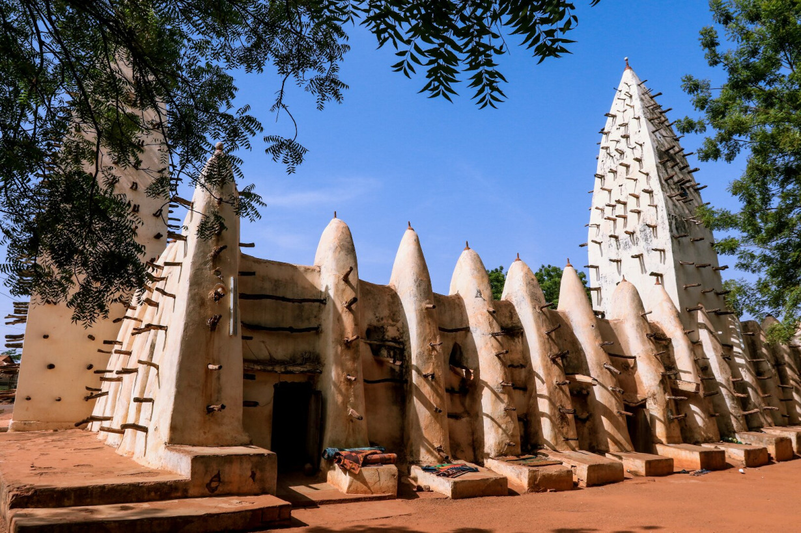
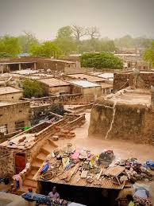
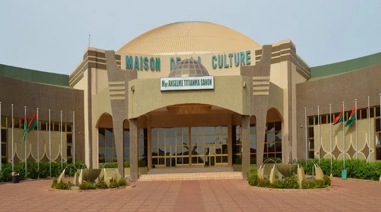
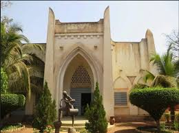
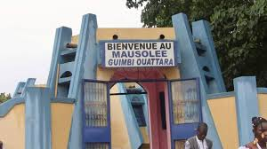
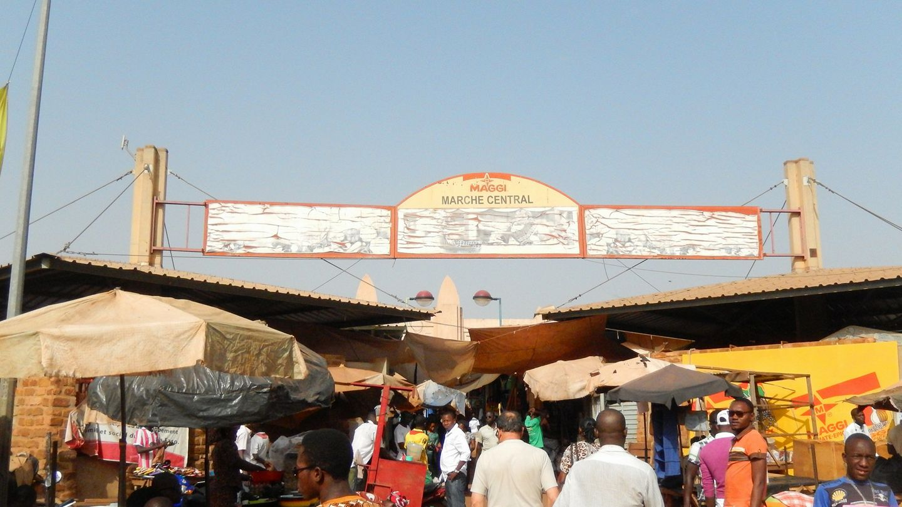
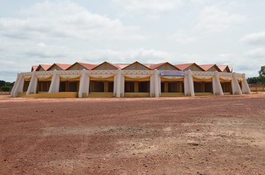
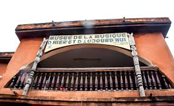
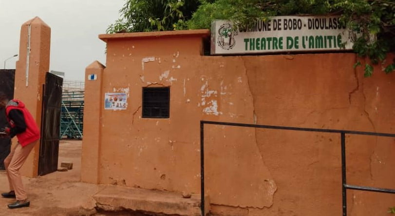
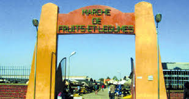

Différents sites de Bobo-Dioulasso
-
Grande Mosquée de Dioulassoba

-
Quartier historique de Dioulassoba

-
Maison de la Culture

-
Musée communal Sogossira Sanon

-
Mausolée de Guimbi OUATTARA

-
Grand Marché

-
Village artisanal de koko

-
Musée de la Musique

-
Théâtre de l'amitié

-
Marché de fruits et légumes
